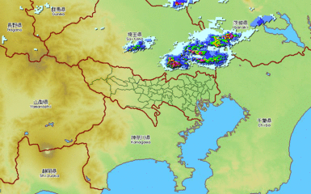
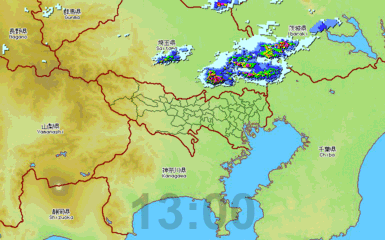

〜2014年5月中旬〜
金曜日のデータを残しておいたのでそれを使う。
というか5月分は全部あったりするが。
% for i in {00..55..5};do convert map000.jpg msk000.png -composite 2014050913$i.gif -composite gif:13:$i;done
% file 13:??
13:00: GIF image data, version 89a, 770 x 480
13:05: GIF image data, version 89a, 770 x 480
13:10: GIF image data, version 89a, 770 x 480
13:15: GIF image data, version 89a, 770 x 480
13:20: GIF image data, version 89a, 770 x 480
13:25: GIF image data, version 89a, 770 x 480
13:30: GIF image data, version 89a, 770 x 480
13:35: GIF image data, version 89a, 770 x 480
13:40: GIF image data, version 89a, 770 x 480
13:45: GIF image data, version 89a, 770 x 480
13:50: GIF image data, version 89a, 770 x 480
13:55: GIF image data, version 89a, 770 x 480
% convert -delay 50 -loop 0 13:?? -resize 50% 13XX.gif
delayは10ms単位、loopを0にすれば無限ループになる。

思わせ振りなファイル名はこのためだったわけだが 看破されてしまった。
% for i in 13:??;do convert $i -gravity south -pointsize 100 -draw "fill-opacity 0.2 text 0,0 '$i'" -depth 4 $i.png;done % convert -delay 50 -loop 0 13:??.png -resize 50% -depth 4 13YY.gif
文字は薄目(fill-opacity 0.2)にしてみた。
中間形式は別にgifにする必要はなくpngでもいい。
それと色数も少ないので16階調もあれば十分。

convertはいろいろと処理をチェインできて、文字を入れるところまで一気にいける。
じゃあ、あのファイル名はなんだったんだという話ではあるが気にしない。
% for i in {00..55..5};do \
convert map000.jpg msk000.png -composite \
2014050913$i.gif -composite \
-gravity south -pointsize 100 \
-draw "fill-opacity 0.2 text 0,0 '13:$i'" \
13:$i.png;\
done
ではアニメーションGIFまで一気にいけるかというとちょっと難しい。
\( map000.jpg msk000.png -composite \ 2014050913$i.gif -composite \ -gravity south -pointsize 100 \ -draw "fill-opacity 0.2 text 0,0 '13:$i'" \)
という文字列を00から55まで5分きざみで作ってconvertの引数に与えてやる必要がある。
このときにシングルクォートやらダブルクォートがあると一気にやっかいになる。つづく。
何がやっかいかというとコマンド置換後メタな文字は意味を失ってしまうのである。
% ruby -e 'p ARGV' $(echo "'a b'") ["'a", "b'"]
のように実行するとわかる通り、quoteがそのまま残り空白で分割されてしまう。
変数に入れても同じこと。
% foo="'a b'" % ruby -e 'p ARGV' $foo ["'a", "b'"]
これを解決するにはevalするかshに食わせるしかない。
まず文字列のほうは
% printf "\( map000.jpg msk000.png -composite \
2014050913%s.gif -composite \
-pointsize 100 -gravity south \
-draw 'fill-opacity 0.2 text 0,0 \"13:%s\"' \) " \
$(printf '%s\n' {00..55..5}|sed p)
で可能。パラメータとしてはファイル名と時刻で2つ必要なのでsed pしている。
% seq 3 | sed p 1 1 2 2 3 3
printf(1)は引数が多い場合はフォーマットが使い回される。
2つprintfはそれを利用している。loopの代わりに使える。
まとめると
% eval convert -delay 50 -loop 0 \
$(printf "\( map000.jpg msk000.png -composite \
2014050913%s.gif -composite \
-pointsize 100 -gravity south \
-draw 'fill-opacity 0.2 text 0,0 \"13:%s\"' \) " \
$(printf '%s\n' {00..55..5}|sed p)) \
-resize 50% -depth 4 13ZZ.gif
となる。
SECONDSという変数に起動してからの秒数が入っているのでecho $SECONDSでok。
ただ秒数じゃわかりにくいということならdateで変換できる。
% date -d@$SECONDS -u +%T 20:01:58
EPOCと見立ててしまえばいい。だから-u(UTC)が必要。
PATHへ新たに追加するのよくあるが、気づくと同じものを何度も追加してしまいがち。
そこでvaredだ。環境変数の内容を編集できる。
% echo $PATH /home/eban/bin:/home/eban/jarp/bin:/usr/local/bin:/usr/bin:/bin:/usr/sbin:/sbin % PATH=$HOME/bin:$PATH % vared PATH /home/eban/bin:/home/eban/jarp/bin:/usr/local/bin:/usr/bin:/bin:/usr/sbin:/sbin
ちょっとわかりにくいが、vared PATHで行編集できる状態になるので、
/home/eban/bin:を削除してEnterでok。
ログインできないわけでどういうことか。
以前からたまにログインできないこともあったが、今回はまったくだめっぽい。
正直diigoから送ってるだけなので、もう要らないっちゃ要らないわけだけど。
atコマンドを実行してみるとなんかアクセスが拒否されてしまう。
昔は別に何もしなくても実行できたと思うんだけど、
ぐぐってみると最近のWindowsでは管理者権限が必要らしい。
しかもatコマンド自体がもうオワコンだからschtasksを使えだと？
いやいやschtasksってなんか使いづらいんだけど。
Cygwinにもなぜかatコマンドがない。というわけでzshのschedだ。
% sched 10:00 command
てな感じで登録できる。10:00になればcommandが実行される。
+00:05のように+をつければ相対になり5分後。
実にわかりやすい。
ただ罠もあって、プロンプトが表示される状態じゃないと動かない。
ふとvimとか起動して放置してたりするとvimが終了するまで待たされる。
このあたりに気をつければ結構使える。